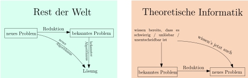

8.8 Anwendungen des Postschen Korrespondenzproblems./course1/wly/08/08-PCP-applications.wly:2:11
8.8 Anwendungen des Postschen Korrespondenzproblems./course1/wly/08/08-PCP-applications.wly:2:11
Erinnerin Sie sich an kontextfreie Grammatiken? Das waren./course1/wly/08/08-PCP-applications.wly:4:5 formale Grammatiken wie zum Beispiel./course1/wly/08/08-PCP-applications.wly:5:5
Diese Grammatiken erlauben uns, gewisse Sprachen zu./course1/wly/08/08-PCP-applications.wly:13:5 beschreiben, indem Sie Regeln festlegen - hier./course1/wly/08/08-PCP-applications.wly:14:5 ./course1/wly/08/08-PCP-applications.wly:15:5Produktionen./course1/wly/08/08-PCP-applications.wly:15:6 genannt, nach welchen man aus dem./course1/wly/08/08-PCP-applications.wly:15:19 Startsymbol ./course1/wly/08/08-PCP-applications.wly:16:5$S$./course1/wly/08/08-PCP-applications.wly:16:17 Wörter über dem Alphabet (hier:./course1/wly/08/08-PCP-applications.wly:16:20 ./course1/wly/08/08-PCP-applications.wly:17:5$\{a,b,c\}$./course1/wly/08/08-PCP-applications.wly:17:5)./course1/wly/08/08-PCP-applications.wly:17:16 ableiten kann. Beispielsweise:./course1/wly/08/08-PCP-applications.wly:17:16
Kontextfreie Grammatiken werden zum Beispiel verwendet, um./course1/wly/08/08-PCP-applications.wly:24:5 die Syntax von Dateiformaten, Programmiersprachen und./course1/wly/08/08-PCP-applications.wly:25:5 manchmal sogar natürlicher Sprachen zu beschreiben. Es wäre./course1/wly/08/08-PCP-applications.wly:26:5 daher schön, über gegebene kontextfreie Grammatik möglichst./course1/wly/08/08-PCP-applications.wly:27:5 viele Dinge herausfinden zu können. Leider sind viele./course1/wly/08/08-PCP-applications.wly:28:5 solche Probleme unentscheidbar. Als einfaches Beispiel:./course1/wly/08/08-PCP-applications.wly:29:5
Theorem 8.8.1./course1/wly/08/08-PCP-applications.wly:31:5 ./course1/wly/08/08-PCP-applications.wly:31:5 Wir wollen bestimmen, ob aus einer gegebenen kontextfreien./course1/wly/08/08-PCP-applications.wly:32:9 Grammatik ./course1/wly/08/08-PCP-applications.wly:33:9$G$./course1/wly/08/08-PCP-applications.wly:33:19 ein Palindromwort ableitbar ist, also ein./course1/wly/08/08-PCP-applications.wly:33:22 ./course1/wly/08/08-PCP-applications.wly:34:9$\gamma$./course1/wly/08/08-PCP-applications.wly:34:9,./course1/wly/08/08-PCP-applications.wly:34:17 das von rechts nach links gelesen gleich ist,./course1/wly/08/08-PCP-applications.wly:34:17 sprich ./course1/wly/08/08-PCP-applications.wly:35:9$\gamma = \gamma^R$./course1/wly/08/08-PCP-applications.wly:35:16../course1/wly/08/08-PCP-applications.wly:35:35 Dieses Problem ist./course1/wly/08/08-PCP-applications.wly:35:35 unentscheidbar. Formal gesehen müssten wir eine Codierung./course1/wly/08/08-PCP-applications.wly:36:9 kontextfreier Grammatiken über einem festen Alphabet (zum./course1/wly/08/08-PCP-applications.wly:37:9 Beispiel ./course1/wly/08/08-PCP-applications.wly:38:9$\{0,1, \rightarrow, ;, \dots\}$./course1/wly/08/08-PCP-applications.wly:38:18 angeben, um dann./course1/wly/08/08-PCP-applications.wly:38:50 die ./course1/wly/08/08-PCP-applications.wly:39:9Sprache der Codierungen all jener kontextfreien./course1/wly/08/08-PCP-applications.wly:39:14 Grammatik, die ein Palindromwort ableiten können./course1/wly/08/08-PCP-applications.wly:40:9 ./course1/wly/08/08-PCP-applications.wly:40:58 definieren zu können. Da wir aber mittlerweile verstanden./course1/wly/08/08-PCP-applications.wly:41:9 haben, dass alle "endlichen" Objekte irgendwie auf./course1/wly/08/08-PCP-applications.wly:42:9 Turingmschinen-verträgliche Weise codiert werden können,./course1/wly/08/08-PCP-applications.wly:43:9 ersparen wir uns diese Formalitäten../course1/wly/08/08-PCP-applications.wly:44:9
Beweis Wir zeigen: wenn man zu einer gegebenen kontextfreien./course1/wly/08/08-PCP-applications.wly:47:9 Grammatik entscheiden könnte, ob sie ein Palindromwort./course1/wly/08/08-PCP-applications.wly:48:9 ableiten kann, dann könnten wir auch entscheiden, ob ein./course1/wly/08/08-PCP-applications.wly:49:9 gegebenes PCP-Puzzle eine Lösung hat. Da wir bereits./course1/wly/08/08-PCP-applications.wly:50:9 Letzteres als unentscheidbar erkannt haben, schließen wir,./course1/wly/08/08-PCP-applications.wly:51:9 dass Ersteres auch unentscheidbar ist. Konkret sei uns nun./course1/wly/08/08-PCP-applications.wly:52:9 also ein PCP-Puzzle ./course1/wly/08/08-PCP-applications.wly:53:9$P$./course1/wly/08/08-PCP-applications.wly:53:29 gegeben. Wir bauen daraus eine./course1/wly/08/08-PCP-applications.wly:53:32 kontextfreie Grammatik ./course1/wly/08/08-PCP-applications.wly:54:9$G$./course1/wly/08/08-PCP-applications.wly:54:32,./course1/wly/08/08-PCP-applications.wly:54:35 so dass ./course1/wly/08/08-PCP-applications.wly:54:35$G$./course1/wly/08/08-PCP-applications.wly:54:45 genau dann ein./course1/wly/08/08-PCP-applications.wly:54:48 Palindromwort ableiten kann, wenn ./course1/wly/08/08-PCP-applications.wly:55:9$P$./course1/wly/08/08-PCP-applications.wly:55:43 eine Lösung hat. Die./course1/wly/08/08-PCP-applications.wly:55:46 Konstruktion ist überraschend einfach. Wir erschaffen ein./course1/wly/08/08-PCP-applications.wly:56:9 Startsymbol ./course1/wly/08/08-PCP-applications.wly:57:9$S$./course1/wly/08/08-PCP-applications.wly:57:21 für unsere Grammatik und erstellen zu./course1/wly/08/08-PCP-applications.wly:57:24 jeder Kachel ./course1/wly/08/08-PCP-applications.wly:58:9$\alpha : \beta$./course1/wly/08/08-PCP-applications.wly:58:22 die Grammatikregel./course1/wly/08/08-PCP-applications.wly:58:38
wobei ./course1/wly/08/08-PCP-applications.wly:64:9$\beta^R$./course1/wly/08/08-PCP-applications.wly:64:15 das Wort ./course1/wly/08/08-PCP-applications.wly:64:24$\beta$./course1/wly/08/08-PCP-applications.wly:64:34 von rechts nach links./course1/wly/08/08-PCP-applications.wly:64:41 gelesen bedeutet, also ./course1/wly/08/08-PCP-applications.wly:65:9$(xyz)^R = zyx$./course1/wly/08/08-PCP-applications.wly:65:32../course1/wly/08/08-PCP-applications.wly:65:47 Wir fügen noch./course1/wly/08/08-PCP-applications.wly:65:47 eine weitere Regel hinzu:./course1/wly/08/08-PCP-applications.wly:66:9
wobei ./course1/wly/08/08-PCP-applications.wly:72:9\(\$\)./course1/wly/08/08-PCP-applications.wly:72:15 ein neues Zeichen ist, dass nicht in der./course1/wly/08/08-PCP-applications.wly:72:21 Symbolmenge des PCP-Puzzles ./course1/wly/08/08-PCP-applications.wly:73:9$P$./course1/wly/08/08-PCP-applications.wly:73:37 enthalten ist../course1/wly/08/08-PCP-applications.wly:73:40
Behauptung 8.8.2./course1/wly/08/08-PCP-applications.wly:75:9 ./course1/wly/08/08-PCP-applications.wly:75:9 Wenn die Grammatik ./course1/wly/08/08-PCP-applications.wly:76:13$G$./course1/wly/08/08-PCP-applications.wly:76:32 ein Palindromwort ableiten kann,./course1/wly/08/08-PCP-applications.wly:76:35 dann hat das PCP-Puzzle ./course1/wly/08/08-PCP-applications.wly:77:13$P$./course1/wly/08/08-PCP-applications.wly:77:37 eine Lösung../course1/wly/08/08-PCP-applications.wly:77:40
Beweis Die letzte angewandte Regel muss ./course1/wly/08/08-PCP-applications.wly:80:13\(S \rightarrow \$\)./course1/wly/08/08-PCP-applications.wly:80:46 ./course1/wly/08/08-PCP-applications.wly:80:66 sein, und somit hat das abgeleitete Wort die Form./course1/wly/08/08-PCP-applications.wly:81:13
Jedes Paar ./course1/wly/08/08-PCP-applications.wly:87:13$\alpha_i : \beta_i$./course1/wly/08/08-PCP-applications.wly:87:24 ist eine Kachel des./course1/wly/08/08-PCP-applications.wly:87:44 PCP-Puzzles. Wenn das Wort ein Palindrom ist, dann gilt./course1/wly/08/08-PCP-applications.wly:88:13 ./course1/wly/08/08-PCP-applications.wly:89:13$\alpha_1 \dots \alpha_n = \beta_1 \dots \beta_n$./course1/wly/08/08-PCP-applications.wly:89:13 und./course1/wly/08/08-PCP-applications.wly:89:62 somit ist./course1/wly/08/08-PCP-applications.wly:90:13
eine Lösung des PCP-Puzzles../course1/wly/08/08-PCP-applications.wly:96:13A\(\square\)
Behauptung 8.8.3./course1/wly/08/08-PCP-applications.wly:98:9 ./course1/wly/08/08-PCP-applications.wly:98:9 Wenn das PCP-Puzzle ./course1/wly/08/08-PCP-applications.wly:99:13$P$./course1/wly/08/08-PCP-applications.wly:99:33 eine Lösung hat, dann kann die./course1/wly/08/08-PCP-applications.wly:99:36 Grammatik ./course1/wly/08/08-PCP-applications.wly:100:13$G$./course1/wly/08/08-PCP-applications.wly:100:23 ein Palindromwort ableiten../course1/wly/08/08-PCP-applications.wly:100:26
Beweis Sei./course1/wly/08/08-PCP-applications.wly:103:13
eine Lösung des Puzzles, also./course1/wly/08/08-PCP-applications.wly:109:13 ./course1/wly/08/08-PCP-applications.wly:110:13$\alpha_1 \alpha_2 \dots \alpha_n = \beta_1 \beta_2 \dots \beta_n$./course1/wly/08/08-PCP-applications.wly:110:13../course1/wly/08/08-PCP-applications.wly:111:21 ./course1/wly/08/08-PCP-applications.wly:111:21 Dann ist auch./course1/wly/08/08-PCP-applications.wly:112:13
ein Palindrom und kann von ./course1/wly/08/08-PCP-applications.wly:118:13$G$./course1/wly/08/08-PCP-applications.wly:118:40 abgeleitet werden:./course1/wly/08/08-PCP-applications.wly:118:43
Somit ist gezeigt, dass ./course1/wly/08/08-PCP-applications.wly:128:13$G$./course1/wly/08/08-PCP-applications.wly:128:37 ein Palindromwort ableiten./course1/wly/08/08-PCP-applications.wly:128:40 kann../course1/wly/08/08-PCP-applications.wly:129:13A\(\square\)
Hätten wir nun also einen Algorithmus, der für eine./course1/wly/08/08-PCP-applications.wly:131:9 gegebene kontextfreie Grammatik entscheiden könnte, ob sie./course1/wly/08/08-PCP-applications.wly:132:9 ein Palindromwort ableiten kann, dann könnten wir./course1/wly/08/08-PCP-applications.wly:133:9 PCP-Puzzles wie folgt entscheiden: nimm das Puzzle ./course1/wly/08/08-PCP-applications.wly:134:9$P$./course1/wly/08/08-PCP-applications.wly:134:60,./course1/wly/08/08-PCP-applications.wly:134:63 ./course1/wly/08/08-PCP-applications.wly:134:63 baue nach den obigen Regeln daraus die Grammatik ./course1/wly/08/08-PCP-applications.wly:135:9$G$./course1/wly/08/08-PCP-applications.wly:135:58 und./course1/wly/08/08-PCP-applications.wly:135:61 frage dann den Algorithmus, ob ./course1/wly/08/08-PCP-applications.wly:136:9$G$./course1/wly/08/08-PCP-applications.wly:136:40 ein Palindromwort./course1/wly/08/08-PCP-applications.wly:136:43 ableiten kann. Dies beantwortet auch die Frage nach der./course1/wly/08/08-PCP-applications.wly:137:9 Lösbarkeit des gegebenen PCP-Puzzles../course1/wly/08/08-PCP-applications.wly:138:9A\(\square\)
Es lohnt sich, an dieser Stelle zu pausieren. Was Sie./course1/wly/08/08-PCP-applications.wly:143:5 gerade gesehen haben, ist eine ./course1/wly/08/08-PCP-applications.wly:144:5Reduktion./course1/wly/08/08-PCP-applications.wly:144:37../course1/wly/08/08-PCP-applications.wly:144:47 Im "echten"./course1/wly/08/08-PCP-applications.wly:144:47 Leben verwenden wir Reduktionen, um bereits gefundene./course1/wly/08/08-PCP-applications.wly:145:5 Lösungen zu "recyceln". Beispielsweise:./course1/wly/08/08-PCP-applications.wly:146:5
Aufgabe:./course1/wly/08/08-PCP-applications.wly:150:14 Zeigen Sie, dass die Funktion ./course1/wly/08/08-PCP-applications.wly:150:23$n \mapsto n!$./course1/wly/08/08-PCP-applications.wly:150:54 im./course1/wly/08/08-PCP-applications.wly:150:68 ./course1/wly/08/08-PCP-applications.wly:151:13$\lambda$./course1/wly/08/08-PCP-applications.wly:151:13-Kalkül./course1/wly/08/08-PCP-applications.wly:151:22 berechenbar ist../course1/wly/08/08-PCP-applications.wly:151:22
Wir wissen bereits, wie man ./course1/wly/08/08-PCP-applications.wly:154:13$n \mapsto n!$./course1/wly/08/08-PCP-applications.wly:154:41 als./course1/wly/08/08-PCP-applications.wly:154:55 primitiv-rekursive Funktion schreibt../course1/wly/08/08-PCP-applications.wly:155:13
Wir wissen bereits, wie man eine allgemeine primitiv./course1/wly/08/08-PCP-applications.wly:158:13 rekursive Funktion im ./course1/wly/08/08-PCP-applications.wly:159:13$\lambda$./course1/wly/08/08-PCP-applications.wly:159:35 -Kalkül implementiert../course1/wly/08/08-PCP-applications.wly:159:44
Wir schließen nun, dass ./course1/wly/08/08-PCP-applications.wly:162:13$n \mapsto n!$./course1/wly/08/08-PCP-applications.wly:162:37 im ./course1/wly/08/08-PCP-applications.wly:162:51$\lambda$./course1/wly/08/08-PCP-applications.wly:162:55 ./course1/wly/08/08-PCP-applications.wly:162:64 -Kalkül implementierbar ist, und ersparen uns die Details../course1/wly/08/08-PCP-applications.wly:163:13
Im Kontext der Turing-Berechenbarkeit können wir dieses./course1/wly/08/08-PCP-applications.wly:165:5 Prinzip wie folgt formalisieren:./course1/wly/08/08-PCP-applications.wly:166:5
Definition 8.8.4 (Reduktion)../course1/wly/08/08-PCP-applications.wly:168:5 Seien ./course1/wly/08/08-PCP-applications.wly:170:23$L_1 \subseteq \Sigma_1$./course1/wly/08/08-PCP-applications.wly:170:30 und./course1/wly/08/08-PCP-applications.wly:170:54 ./course1/wly/08/08-PCP-applications.wly:171:9$L_2 \subseteq \Sigma_2$./course1/wly/08/08-PCP-applications.wly:171:9 zwei Sprachen. Eine ./course1/wly/08/08-PCP-applications.wly:171:33Reduktion./course1/wly/08/08-PCP-applications.wly:171:55 von ./course1/wly/08/08-PCP-applications.wly:172:9$L_1$./course1/wly/08/08-PCP-applications.wly:172:13 nach ./course1/wly/08/08-PCP-applications.wly:172:18$L_2$./course1/wly/08/08-PCP-applications.wly:172:24 ist eine Turing-berechenbare./course1/wly/08/08-PCP-applications.wly:172:30 Funktion./course1/wly/08/08-PCP-applications.wly:173:9
mit der Eigenschaft, dass./course1/wly/08/08-PCP-applications.wly:179:9
Erinnern Sie sich: dass ./course1/wly/08/08-PCP-applications.wly:185:5$f$./course1/wly/08/08-PCP-applications.wly:185:29 Turing-berechenbar ist, heißt,./course1/wly/08/08-PCP-applications.wly:185:32 dass es eine Turingmaschine ./course1/wly/08/08-PCP-applications.wly:186:5$_f$./course1/wly/08/08-PCP-applications.wly:186:33 gibt mit einem./course1/wly/08/08-PCP-applications.wly:186:37 dezidierten Ausgabe-Band, so dass ./course1/wly/08/08-PCP-applications.wly:187:5$M_f(x)$./course1/wly/08/08-PCP-applications.wly:187:39 für jedes./course1/wly/08/08-PCP-applications.wly:187:47 Eingabewort terminiert und zum Zeitpunkt der Terminierung./course1/wly/08/08-PCP-applications.wly:188:5 ./course1/wly/08/08-PCP-applications.wly:189:5$f(x)$./course1/wly/08/08-PCP-applications.wly:189:5 auf das Ausgabeband geschrieben hat. Wenn wir eine./course1/wly/08/08-PCP-applications.wly:189:11 Reduktion von ./course1/wly/08/08-PCP-applications.wly:190:5$L_1$./course1/wly/08/08-PCP-applications.wly:190:19 nach ./course1/wly/08/08-PCP-applications.wly:190:24$L_2$./course1/wly/08/08-PCP-applications.wly:190:30 haben, dann liefert uns./course1/wly/08/08-PCP-applications.wly:190:35 jeder Entscheidungsalgorithmus für ./course1/wly/08/08-PCP-applications.wly:191:5$L_2$./course1/wly/08/08-PCP-applications.wly:191:40 unmittelbar einen./course1/wly/08/08-PCP-applications.wly:191:45 Entscheidungsalgorithmus für ./course1/wly/08/08-PCP-applications.wly:192:5$L_1$./course1/wly/08/08-PCP-applications.wly:192:34:./course1/wly/08/08-PCP-applications.wly:192:39
Beobachtung 8.8.5./course1/wly/08/08-PCP-applications.wly:194:5 ./course1/wly/08/08-PCP-applications.wly:194:5 Wenn ./course1/wly/08/08-PCP-applications.wly:195:9$f$./course1/wly/08/08-PCP-applications.wly:195:14 eine Reduktion von ./course1/wly/08/08-PCP-applications.wly:195:17$L_1$./course1/wly/08/08-PCP-applications.wly:195:37 nach ./course1/wly/08/08-PCP-applications.wly:195:42$L_2$./course1/wly/08/08-PCP-applications.wly:195:48 ist und ./course1/wly/08/08-PCP-applications.wly:195:53$L_2$./course1/wly/08/08-PCP-applications.wly:195:62 ./course1/wly/08/08-PCP-applications.wly:195:67 entscheidbar ist, dann ist auch ./course1/wly/08/08-PCP-applications.wly:196:9$L_1$./course1/wly/08/08-PCP-applications.wly:196:41 entscheidbar../course1/wly/08/08-PCP-applications.wly:196:46
Beweis Sei ./course1/wly/08/08-PCP-applications.wly:199:9$M_2$./course1/wly/08/08-PCP-applications.wly:199:13 eine Turingmaschine, die ./course1/wly/08/08-PCP-applications.wly:199:18$L_2$./course1/wly/08/08-PCP-applications.wly:199:44 entscheidet und./course1/wly/08/08-PCP-applications.wly:199:49 sei ./course1/wly/08/08-PCP-applications.wly:200:9$M_f$./course1/wly/08/08-PCP-applications.wly:200:13 die Turingmaschine, die ./course1/wly/08/08-PCP-applications.wly:200:18$f$./course1/wly/08/08-PCP-applications.wly:200:43 berechnet. Wir bauen./course1/wly/08/08-PCP-applications.wly:200:46 nun eine neue Turingmaschine ./course1/wly/08/08-PCP-applications.wly:201:9$M_1$./course1/wly/08/08-PCP-applications.wly:201:38../course1/wly/08/08-PCP-applications.wly:201:43 Sie nimmt das./course1/wly/08/08-PCP-applications.wly:201:43 Eingabewort ./course1/wly/08/08-PCP-applications.wly:202:9$x \in \Sigma_1^*$./course1/wly/08/08-PCP-applications.wly:202:21 und lässt die./course1/wly/08/08-PCP-applications.wly:202:39 Turingmaschine ./course1/wly/08/08-PCP-applications.wly:203:9$M_f$./course1/wly/08/08-PCP-applications.wly:203:24 auf ./course1/wly/08/08-PCP-applications.wly:203:29$x$./course1/wly/08/08-PCP-applications.wly:203:34 arbeiten; wenn ./course1/wly/08/08-PCP-applications.wly:203:37$M_f$./course1/wly/08/08-PCP-applications.wly:203:53 ./course1/wly/08/08-PCP-applications.wly:203:58 terminiert, steht ./course1/wly/08/08-PCP-applications.wly:204:9$f(x)$./course1/wly/08/08-PCP-applications.wly:204:27 auf ihrem Ausgabeband. Wir rufen./course1/wly/08/08-PCP-applications.wly:204:33 nun die Turing-Maschien ./course1/wly/08/08-PCP-applications.wly:205:9$M_2$./course1/wly/08/08-PCP-applications.wly:205:33 mit dem Eingabewort ./course1/wly/08/08-PCP-applications.wly:205:38$f(x)$./course1/wly/08/08-PCP-applications.wly:205:59 ./course1/wly/08/08-PCP-applications.wly:205:65 auf. Wenn ./course1/wly/08/08-PCP-applications.wly:206:9$M_2$./course1/wly/08/08-PCP-applications.wly:206:19 akzeptiert (oder eben ablehnt), dann./course1/wly/08/08-PCP-applications.wly:206:24 lassen wir ./course1/wly/08/08-PCP-applications.wly:207:9$M_1$./course1/wly/08/08-PCP-applications.wly:207:20 akzeptieren (oder eben ablehnen). Es gilt./course1/wly/08/08-PCP-applications.wly:207:25 nun:./course1/wly/08/08-PCP-applications.wly:208:9
und somit entscheidet ./course1/wly/08/08-PCP-applications.wly:216:9$M_1$./course1/wly/08/08-PCP-applications.wly:216:31 die Sprache ./course1/wly/08/08-PCP-applications.wly:216:36$L_1$./course1/wly/08/08-PCP-applications.wly:216:49../course1/wly/08/08-PCP-applications.wly:216:54A\(\square\)
Stellen Sie sich einfach vor, dass ./course1/wly/08/08-PCP-applications.wly:218:5$M_f$./course1/wly/08/08-PCP-applications.wly:218:40 der Code ist, den./course1/wly/08/08-PCP-applications.wly:218:45 Sie selber schreiben müssen, und ./course1/wly/08/08-PCP-applications.wly:219:5$M_2$./course1/wly/08/08-PCP-applications.wly:219:38 die./course1/wly/08/08-PCP-applications.wly:219:43 "Bibliotheksfunktion" ist, die Sie ohne groß nachzudenken./course1/wly/08/08-PCP-applications.wly:220:5 aufrufen, weil sie ja bereist von anderen Leuten./course1/wly/08/08-PCP-applications.wly:221:5 (hoffentlich korrekt) implementiert worden ist. Behauptung./course1/wly/08/08-PCP-applications.wly:222:5 4.6.8 zeigt also, das etwas ./course1/wly/08/08-PCP-applications.wly:223:5möglich./course1/wly/08/08-PCP-applications.wly:223:34 ist. In der./course1/wly/08/08-PCP-applications.wly:223:42 Berechenbarkeitstheorie und Komplexitätstheorie sind wir./course1/wly/08/08-PCP-applications.wly:224:5 eher daran interessiert, zu zeigen, was ./course1/wly/08/08-PCP-applications.wly:225:5nicht möglich./course1/wly/08/08-PCP-applications.wly:225:46 ./course1/wly/08/08-PCP-applications.wly:225:60 ist, und wenden daher häufiger das Kontrapositiv der./course1/wly/08/08-PCP-applications.wly:226:5 Behauptung an:./course1/wly/08/08-PCP-applications.wly:227:5
Beobachtung 8.8.6./course1/wly/08/08-PCP-applications.wly:229:5 ./course1/wly/08/08-PCP-applications.wly:229:5 Wenn ./course1/wly/08/08-PCP-applications.wly:230:9$f$./course1/wly/08/08-PCP-applications.wly:230:14 eine Reduktion von ./course1/wly/08/08-PCP-applications.wly:230:17$L_1$./course1/wly/08/08-PCP-applications.wly:230:37 nach ./course1/wly/08/08-PCP-applications.wly:230:42$L_2$./course1/wly/08/08-PCP-applications.wly:230:48 ist und ./course1/wly/08/08-PCP-applications.wly:230:53$L_1$./course1/wly/08/08-PCP-applications.wly:230:62 ./course1/wly/08/08-PCP-applications.wly:230:67 unentscheidbar ist, dann ist auch ./course1/wly/08/08-PCP-applications.wly:231:9$L_2$./course1/wly/08/08-PCP-applications.wly:231:43 unentscheidbar../course1/wly/08/08-PCP-applications.wly:231:48
Beweis Angenommen, ./course1/wly/08/08-PCP-applications.wly:234:9$L_2$./course1/wly/08/08-PCP-applications.wly:234:21 wäre entscheidbar. Dann wäre laut./course1/wly/08/08-PCP-applications.wly:234:26 Behauptung 4.6.8 die Sprache ./course1/wly/08/08-PCP-applications.wly:235:9$L_1$./course1/wly/08/08-PCP-applications.wly:235:38 ja auch entscheidbar,./course1/wly/08/08-PCP-applications.wly:235:43 was sie aber nach Annahme nicht ist. Daher ist ./course1/wly/08/08-PCP-applications.wly:236:9$L_2$./course1/wly/08/08-PCP-applications.wly:236:56 eben./course1/wly/08/08-PCP-applications.wly:236:61 nicht entscheidbar../course1/wly/08/08-PCP-applications.wly:237:9A\(\square\)
Beachten Sie nun, dass so etwas wie Behauptung 4.6.9./course1/wly/08/08-PCP-applications.wly:239:5 bereits oben angewandt haben: wir haben das Haltproblem auf./course1/wly/08/08-PCP-applications.wly:240:5 das MPCP-Problem reduziert; jenes dann auf das PCP; und./course1/wly/08/08-PCP-applications.wly:241:5 schließlich PCP auf das "Kann ein Palindrom abgeleitet./course1/wly/08/08-PCP-applications.wly:242:5 werden"-Problem. Wir haben also eine ganze Kette von./course1/wly/08/08-PCP-applications.wly:243:5 Reduktionen bereits durchgeführt. Für Neulinge ist diese./course1/wly/08/08-PCP-applications.wly:244:5 Richtung oft inintuitiv und verwirrend. Dies spiegelt sich./course1/wly/08/08-PCP-applications.wly:245:5 in der Verwendung des Konjunktivs ./course1/wly/08/08-PCP-applications.wly:246:5wäre / wäre./course1/wly/08/08-PCP-applications.wly:246:40 in./course1/wly/08/08-PCP-applications.wly:246:52 Behauptung 4.6.9 wider. Auch ist es schlicht ungewohnt, ein./course1/wly/08/08-PCP-applications.wly:247:5 ./course1/wly/08/08-PCP-applications.wly:248:5altes./course1/wly/08/08-PCP-applications.wly:248:6 Problem auf ein ./course1/wly/08/08-PCP-applications.wly:248:12neues./course1/wly/08/08-PCP-applications.wly:248:30 zu reduzieren statt./course1/wly/08/08-PCP-applications.wly:248:36 umgekehrt../course1/wly/08/08-PCP-applications.wly:249:5

course1/public/img/pcp/reduction.svgÜben wir also Reduktionen:./course1/wly/08/08-PCP-applications.wly:256:5
Theorem 8.8.7 (Schnittproblem kontextfreier Sprachen)./course1/wly/08/08-PCP-applications.wly:258:5 Gegeben zwei./course1/wly/08/08-PCP-applications.wly:259:50 kontextfreie Grammatiken ./course1/wly/08/08-PCP-applications.wly:260:9$G_1, G_2$./course1/wly/08/08-PCP-applications.wly:260:34../course1/wly/08/08-PCP-applications.wly:260:44 Es ist./course1/wly/08/08-PCP-applications.wly:260:44 unentscheidbar, ob ./course1/wly/08/08-PCP-applications.wly:261:9$L(G_1) \cap L(G_2)$./course1/wly/08/08-PCP-applications.wly:261:28 nichtleer ist, ob./course1/wly/08/08-PCP-applications.wly:261:48 es also ein Wort ./course1/wly/08/08-PCP-applications.wly:262:9$x$./course1/wly/08/08-PCP-applications.wly:262:26 mit ./course1/wly/08/08-PCP-applications.wly:262:29$x \in G_1$./course1/wly/08/08-PCP-applications.wly:262:34 und ./course1/wly/08/08-PCP-applications.wly:262:45$x \in G_2$./course1/wly/08/08-PCP-applications.wly:262:50 gibt../course1/wly/08/08-PCP-applications.wly:262:61 Dieses Problem ist als ./course1/wly/08/08-PCP-applications.wly:263:9Schnittproblem kontextfreier./course1/wly/08/08-PCP-applications.wly:263:33 Sprachen./course1/wly/08/08-PCP-applications.wly:264:9 bekannt../course1/wly/08/08-PCP-applications.wly:264:18
Beweis Wir reduzieren das Palindromwortproblem (bereits bekannt)./course1/wly/08/08-PCP-applications.wly:267:9 auf das Schnittproblem (neues Problem). Sei ./course1/wly/08/08-PCP-applications.wly:268:9$G$./course1/wly/08/08-PCP-applications.wly:268:53 eine./course1/wly/08/08-PCP-applications.wly:268:56 Grammatik und ./course1/wly/08/08-PCP-applications.wly:269:9$\Sigma$./course1/wly/08/08-PCP-applications.wly:269:23 die Menge der Terminalsymbole. Sei./course1/wly/08/08-PCP-applications.wly:269:31 ./course1/wly/08/08-PCP-applications.wly:270:9$G'$./course1/wly/08/08-PCP-applications.wly:270:9 die folgende Grammatik:./course1/wly/08/08-PCP-applications.wly:270:13
Die Grammatik ./course1/wly/08/08-PCP-applications.wly:278:9$G'$./course1/wly/08/08-PCP-applications.wly:278:23 erzeugt genau die Sprache der./course1/wly/08/08-PCP-applications.wly:278:27 Palindromwörter über ./course1/wly/08/08-PCP-applications.wly:279:9$\Sigma$./course1/wly/08/08-PCP-applications.wly:279:30../course1/wly/08/08-PCP-applications.wly:279:38 Unsere Reduktion ./course1/wly/08/08-PCP-applications.wly:279:38$f$./course1/wly/08/08-PCP-applications.wly:279:57 nimmt./course1/wly/08/08-PCP-applications.wly:279:60 nun als Eingabe eine kontextfreie Grammatik ./course1/wly/08/08-PCP-applications.wly:280:9$G$./course1/wly/08/08-PCP-applications.wly:280:53 (bzw../course1/wly/08/08-PCP-applications.wly:280:56 deren Codierung) und gibt das Paar ./course1/wly/08/08-PCP-applications.wly:281:9$(G,G')$./course1/wly/08/08-PCP-applications.wly:281:44 aus (bzw../course1/wly/08/08-PCP-applications.wly:281:52 deren Codierungen). Wir stellen fest: ./course1/wly/08/08-PCP-applications.wly:282:9$G$./course1/wly/08/08-PCP-applications.wly:282:47 kann ein./course1/wly/08/08-PCP-applications.wly:282:50 Palindromwort ableiten genau dann, wenn./course1/wly/08/08-PCP-applications.wly:283:9 ./course1/wly/08/08-PCP-applications.wly:284:9$L(G) \cap L(G') \ne \emptyset$./course1/wly/08/08-PCP-applications.wly:284:9,./course1/wly/08/08-PCP-applications.wly:284:40 wenn es also ein Wort./course1/wly/08/08-PCP-applications.wly:284:40 ./course1/wly/08/08-PCP-applications.wly:285:9$\alpha$./course1/wly/08/08-PCP-applications.wly:285:9 gibt, dass aus ./course1/wly/08/08-PCP-applications.wly:285:17$G$./course1/wly/08/08-PCP-applications.wly:285:33 und aus ./course1/wly/08/08-PCP-applications.wly:285:36$G'$./course1/wly/08/08-PCP-applications.wly:285:45 abgeleitet werden./course1/wly/08/08-PCP-applications.wly:285:49 kann. Die Funktion ./course1/wly/08/08-PCP-applications.wly:286:9$f$./course1/wly/08/08-PCP-applications.wly:286:28 ist also eine Reduktion vom./course1/wly/08/08-PCP-applications.wly:286:31 Palindromwortproblem auf das Schnittproblem. Mit Behauptung./course1/wly/08/08-PCP-applications.wly:287:9 4.6.9 zusammen heißt das, dass das Schnittproblem./course1/wly/08/08-PCP-applications.wly:288:9 unentscheidbar ist../course1/wly/08/08-PCP-applications.wly:289:9A\(\square\)
Theorem 8.8.8 (Mehrdeutigkeitsproblem kontextfreier Sprachen)./course1/wly/08/08-PCP-applications.wly:291:5 Gegeben./course1/wly/08/08-PCP-applications.wly:292:58 eine kontextfreie Grammatik ./course1/wly/08/08-PCP-applications.wly:293:9$G$./course1/wly/08/08-PCP-applications.wly:293:37../course1/wly/08/08-PCP-applications.wly:293:40 Es ist unentscheidbar, ob./course1/wly/08/08-PCP-applications.wly:293:40 ./course1/wly/08/08-PCP-applications.wly:294:9$G$./course1/wly/08/08-PCP-applications.wly:294:9 mehrdeutig ist, d.h., ob es ein Wort ./course1/wly/08/08-PCP-applications.wly:294:12$x \in \Sigma^*$./course1/wly/08/08-PCP-applications.wly:294:50 ./course1/wly/08/08-PCP-applications.wly:294:66 gibt, für das zwei verschiedene Ableitungsbäume existieren../course1/wly/08/08-PCP-applications.wly:295:9
Falscher Beweis../course1/wly/08/08-PCP-applications.wly:300:10 Wir reduzieren das uns bereits bekannte./course1/wly/08/08-PCP-applications.wly:300:27 Schnittproblem auf das Mehrdeutigkeitsproblem. Gegeben./course1/wly/08/08-PCP-applications.wly:301:9 seien zwei kontextfreie Grammatiken ./course1/wly/08/08-PCP-applications.wly:302:9$G_1, G_2$./course1/wly/08/08-PCP-applications.wly:302:45 mit./course1/wly/08/08-PCP-applications.wly:302:55 Startsymbolen ./course1/wly/08/08-PCP-applications.wly:303:9$S_1, S_2$./course1/wly/08/08-PCP-applications.wly:303:23 und Nichtterminalmenge ./course1/wly/08/08-PCP-applications.wly:303:33$N_1, N_2$./course1/wly/08/08-PCP-applications.wly:303:57../course1/wly/08/08-PCP-applications.wly:303:67 ./course1/wly/08/08-PCP-applications.wly:303:67 Wir machen in einem ersten Schritt die Mengen ./course1/wly/08/08-PCP-applications.wly:304:9$N_1$./course1/wly/08/08-PCP-applications.wly:304:55 und./course1/wly/08/08-PCP-applications.wly:304:60 ./course1/wly/08/08-PCP-applications.wly:305:9$N_2$./course1/wly/08/08-PCP-applications.wly:305:9 disjunkt (wenn sie es nicht eh schon sind; wir./course1/wly/08/08-PCP-applications.wly:305:14 können beispielsweise jedes ./course1/wly/08/08-PCP-applications.wly:306:9$X \in N_2$./course1/wly/08/08-PCP-applications.wly:306:37 in ./course1/wly/08/08-PCP-applications.wly:306:48$X'$./course1/wly/08/08-PCP-applications.wly:306:52 ./course1/wly/08/08-PCP-applications.wly:306:56 umbenennen). Dann führen wir ein Super-Startsymbol ./course1/wly/08/08-PCP-applications.wly:307:9$S$./course1/wly/08/08-PCP-applications.wly:307:60 ein./course1/wly/08/08-PCP-applications.wly:307:63 und zwei Produktionen:./course1/wly/08/08-PCP-applications.wly:308:9
und übernehmen alle Produktionen von ./course1/wly/08/08-PCP-applications.wly:315:9$G_1$./course1/wly/08/08-PCP-applications.wly:315:46 und ./course1/wly/08/08-PCP-applications.wly:315:51$G_2$./course1/wly/08/08-PCP-applications.wly:315:56../course1/wly/08/08-PCP-applications.wly:315:61 Dies./course1/wly/08/08-PCP-applications.wly:315:61 ist unsere neue Grammatik ./course1/wly/08/08-PCP-applications.wly:316:9$G$./course1/wly/08/08-PCP-applications.wly:316:35../course1/wly/08/08-PCP-applications.wly:316:38 Sie sehen nun: wenn es ein./course1/wly/08/08-PCP-applications.wly:316:38 ./course1/wly/08/08-PCP-applications.wly:317:9$x \in L(G_1) \cap L(G_2)$./course1/wly/08/08-PCP-applications.wly:317:9 gibt, dann kann man ./course1/wly/08/08-PCP-applications.wly:317:35$x$./course1/wly/08/08-PCP-applications.wly:317:56 auf./course1/wly/08/08-PCP-applications.wly:317:59 zwei verschiedene Weisen in ./course1/wly/08/08-PCP-applications.wly:318:9$G$./course1/wly/08/08-PCP-applications.wly:318:37 ableiten, nämlich./course1/wly/08/08-PCP-applications.wly:318:40
und das sind wirklich zwei verschiedene Ableitungen, weil./course1/wly/08/08-PCP-applications.wly:325:9 ja bereits ./course1/wly/08/08-PCP-applications.wly:326:9$S_1 \ne S_2$./course1/wly/08/08-PCP-applications.wly:326:20../course1/wly/08/08-PCP-applications.wly:326:33 Wenn nun umgekehrt ein Wort ./course1/wly/08/08-PCP-applications.wly:326:33$y$./course1/wly/08/08-PCP-applications.wly:326:63 ./course1/wly/08/08-PCP-applications.wly:326:66 via ./course1/wly/08/08-PCP-applications.wly:327:9$S_1$./course1/wly/08/08-PCP-applications.wly:327:13 und via ./course1/wly/08/08-PCP-applications.wly:327:18$S_2$./course1/wly/08/08-PCP-applications.wly:327:27 ableitbar sein sollte ./course1/wly/08/08-PCP-applications.wly:327:32(./course1/wly/08/08-PCP-applications.wly:327:32$G$./course1/wly/08/08-PCP-applications.wly:327:56 also./course1/wly/08/08-PCP-applications.wly:327:59 mehrdeutig sein sollte), dann bedeutet dies, dass ./course1/wly/08/08-PCP-applications.wly:328:9$G_1$./course1/wly/08/08-PCP-applications.wly:328:59 ./course1/wly/08/08-PCP-applications.wly:328:64 und ./course1/wly/08/08-PCP-applications.wly:329:9$G_2$./course1/wly/08/08-PCP-applications.wly:329:13 beide das Wort ./course1/wly/08/08-PCP-applications.wly:329:18$y$./course1/wly/08/08-PCP-applications.wly:329:34 ableiten können, also einen./course1/wly/08/08-PCP-applications.wly:329:37 nichtleeren Schnitt haben. Dies ist somit unsere Reduktion./course1/wly/08/08-PCP-applications.wly:330:9 ./course1/wly/08/08-PCP-applications.wly:331:9$f$./course1/wly/08/08-PCP-applications.wly:331:9 : nimm als Eingabe das Paar ./course1/wly/08/08-PCP-applications.wly:331:12$G_1, G_2$./course1/wly/08/08-PCP-applications.wly:331:41 (bzw. dessen./course1/wly/08/08-PCP-applications.wly:331:51 Codierung), konstruiere ./course1/wly/08/08-PCP-applications.wly:332:9$G$./course1/wly/08/08-PCP-applications.wly:332:33 und gib ./course1/wly/08/08-PCP-applications.wly:332:36$G$./course1/wly/08/08-PCP-applications.wly:332:45 aus. Dieses ./course1/wly/08/08-PCP-applications.wly:332:48$f$./course1/wly/08/08-PCP-applications.wly:332:61 ./course1/wly/08/08-PCP-applications.wly:332:64 reduziert das Schnittproblem auf das./course1/wly/08/08-PCP-applications.wly:333:9 Mehrdeutigkeitsproblem../course1/wly/08/08-PCP-applications.wly:334:9
Haben Sie den Fehler im Beweis erkannt? Das Problem ist,./course1/wly/08/08-PCP-applications.wly:336:5 dass es sein könnte, dass ./course1/wly/08/08-PCP-applications.wly:337:5$G_1$./course1/wly/08/08-PCP-applications.wly:337:31 und ./course1/wly/08/08-PCP-applications.wly:337:36$G_2$./course1/wly/08/08-PCP-applications.wly:337:41 leeren Schnitt./course1/wly/08/08-PCP-applications.wly:337:46 haben, ./course1/wly/08/08-PCP-applications.wly:338:5$G_1$./course1/wly/08/08-PCP-applications.wly:338:12 aber bereits mehrdeutig ist. Die./course1/wly/08/08-PCP-applications.wly:338:17 Ausgabe-Grammatik ./course1/wly/08/08-PCP-applications.wly:339:5$G$./course1/wly/08/08-PCP-applications.wly:339:23 wäre dann auch mehrdeutig; also./course1/wly/08/08-PCP-applications.wly:339:26 hätte die Reduktion ./course1/wly/08/08-PCP-applications.wly:340:5$f$./course1/wly/08/08-PCP-applications.wly:340:25 einen Fehler gemacht. Wir müssen./course1/wly/08/08-PCP-applications.wly:340:28 leider bis zum Postschen Korrespondenzproblem zurückgehen./course1/wly/08/08-PCP-applications.wly:341:5 und direkt von dort reduzieren. Problematisch ist, dass ein./course1/wly/08/08-PCP-applications.wly:342:5 PCP-Puzzle selbst mehrere Lösungen haben kann und auch für./course1/wly/08/08-PCP-applications.wly:343:5 ein Lösungswort ./course1/wly/08/08-PCP-applications.wly:344:5$\gamma$./course1/wly/08/08-PCP-applications.wly:344:21 es mehrere Möglichkeiten geben./course1/wly/08/08-PCP-applications.wly:344:29 kann, es zu "legen", also./course1/wly/08/08-PCP-applications.wly:345:5
Wenn dem so wäre, dann würde bereits unsere Reduktion auf./course1/wly/08/08-PCP-applications.wly:352:5 das Palindromwortproblem eine mehrdeutige Grammatik./course1/wly/08/08-PCP-applications.wly:353:5 erzeugen. Wir gehen einen anderen Weg. Ich folge hier dem./course1/wly/08/08-PCP-applications.wly:354:5 Tip in Exercise 5.21 aus Michael Sipsers Buch ./course1/wly/08/08-PCP-applications.wly:355:5Introduction./course1/wly/08/08-PCP-applications.wly:355:52 to the Theory of Computation./course1/wly/08/08-PCP-applications.wly:356:5,./course1/wly/08/08-PCP-applications.wly:356:34 third edition../course1/wly/08/08-PCP-applications.wly:356:34
Beweis Sei ein PCP-Puzzle./course1/wly/08/08-PCP-applications.wly:359:9 ./course1/wly/08/08-PCP-applications.wly:360:9$P = \{ (\alpha_1:\beta_1), \dots, (\alpha_n : \beta_n)\}$./course1/wly/08/08-PCP-applications.wly:360:9 ./course1/wly/08/08-PCP-applications.wly:360:67 gegeben. Wir erstellen nun eine kontextfreie Gramatik, die./course1/wly/08/08-PCP-applications.wly:361:9 es dem "User" erlaubt, zu entscheiden, ob er das Wort via./course1/wly/08/08-PCP-applications.wly:362:9 die oberen Teile ./course1/wly/08/08-PCP-applications.wly:363:9$\alpha_i$./course1/wly/08/08-PCP-applications.wly:363:26 oder via die unteren Teile./course1/wly/08/08-PCP-applications.wly:363:36 ableiten will; wenn es auf beide Weisen geht, dann ist die./course1/wly/08/08-PCP-applications.wly:364:9 Grammatik mehrdeutig und das PCP hat eine Lösung. Also:./course1/wly/08/08-PCP-applications.wly:365:9
wobei ./course1/wly/08/08-PCP-applications.wly:374:9$1, 2, \dots, n$./course1/wly/08/08-PCP-applications.wly:374:15 neue Symbole sind. Die Indizes ./course1/wly/08/08-PCP-applications.wly:374:31$i$./course1/wly/08/08-PCP-applications.wly:374:63 ./course1/wly/08/08-PCP-applications.wly:374:66 stellen sicher, dass jede von ./course1/wly/08/08-PCP-applications.wly:375:9$S_1$./course1/wly/08/08-PCP-applications.wly:375:39 ausgehende Ableitung./course1/wly/08/08-PCP-applications.wly:375:44 eindeutig ist (und genau so von ./course1/wly/08/08-PCP-applications.wly:376:9$S_2$./course1/wly/08/08-PCP-applications.wly:376:41);./course1/wly/08/08-PCP-applications.wly:376:46 die einzige./course1/wly/08/08-PCP-applications.wly:376:46 Mehrdeutigkeit kann aufkommen, wenn ein Wort sowohl via./course1/wly/08/08-PCP-applications.wly:377:9 ./course1/wly/08/08-PCP-applications.wly:378:9$S_1$./course1/wly/08/08-PCP-applications.wly:378:9 als auch via ./course1/wly/08/08-PCP-applications.wly:378:14$S_2$./course1/wly/08/08-PCP-applications.wly:378:28 ableitbar ist; und dies geschieht./course1/wly/08/08-PCP-applications.wly:378:33 genau dann, wenn das PCP-Puzzle eine Lösung hat. Wir haben./course1/wly/08/08-PCP-applications.wly:379:9 nun also unsere Reduktion von PCP auf das./course1/wly/08/08-PCP-applications.wly:380:9 Mehrdeutigkeitsproblem../course1/wly/08/08-PCP-applications.wly:381:9A\(\square\)